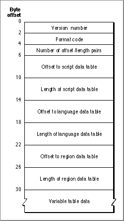
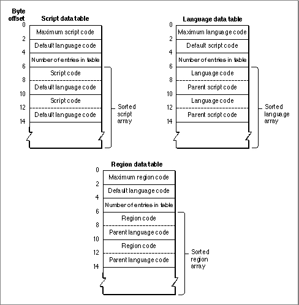

Script-Sorting Resource (Type 'itlm')
The script-sorting resource (resource type'itlm') lists, in preferred sorting order, a
set of script codes, language codes, and region codes. For each listed script system it defines the default language; for each listed language it defines the script system that language belongs to; and for each listed regional version it describes the language
that region belongs to. The listing may be sparse; not all defined script, language, and region codes need appear in the resource. Only one script-sorting resource is provided with each localized version of Macintosh system software. It is in the System file. Its resource ID is 0.One purpose of the script-sorting resource is to aid the sorting of multilanguage lists. Each individual script system defines, in its string-manipulation (
'itl2') resource, how its own strings are sorted; the script-sorting resource defines how strings in two or more different scripts (or languages or regions) are ordered. For example, the string-manipulation resource for the Japanese script system defines the order in which Japanese strings appear in a sorted list. The script-sorting resource, on the other hand, defines whether Japanese strings appear before or after Roman strings in a sorted list.Another purpose of the script-sorting resource is to provide a mapping among scripts, languages, and regions. From information in the resource you can determine all
- IMPORTANT
- Regardless of the sorting order presented in the script-sorting resource, text in the system script is always sorted to appear ahead of text in any other script system.
the languages of a listed script system, and all the regional variations of a listed language.The script-sorting resource consists of a resource header followed by three tables.
Figure B-1 shows the format of the resource header.Figure B-1 Format of the script-sorting resource header

The resource header contains these elements:Currently there are three defined tables in the script-sorting resource: the script data table, the language data table, and the region data table. The formats of the three tables are similar, as shown in Figure B-2.
- Version number. The version number of this resource.
- Format code. A number that identifies the format of this resource.
- Number of offset/length pairs. The number of data tables in the resource.
- Offsets to, and lengths of, the defined tables for this resource. Offsets are measured from the beginning of the resource.
Figure B-2 Script, language, and region data tables in the script-sorting resource

Each table consists of a header, followed by an array of paired integers. These are the fields in the script data table, language data table, and region data table, respectively:Constants for all defined script codes, language codes, and region codes are listed in the chapter "Script Manager" in this book.
- Maximum code. The maximum defined value for script, language, or region code listed in this table. Because entries in the table may be sparse (incomplete), this value is useful for defining the maximum size of table to construct to hold the information. For example, a maximum script code of
smUninterpmeans the script data table might cover any subset of the scripts with codes 0 through 32, but the table does not contain any script codes above 32.- Default code. The default language code for unlisted script codes, the default script code for unlisted language codes, or the default language code for unlisted region codes. This assures a defined sorting position for any script, language, or region code, whether or not it is listed in the resource.
- Number of entries in table. The number of script codes, language codes, or region codes in this table.
- Sorted array. A list of paired integers, in sorting order:
- For the script data table, it is a script array: a list of script codes in their preferred sorting order, each paired with (followed by) its default language code.
- For the language data table, it is a language array: a list of language codes in their preferred sorting order, each paired with (followed by) the code for its parent script.
- For the region data table, it is a region array: a list of region codes in their preferred sorting order, each paired with (followed by) the code for its parent language.
Table B-3 lists a sorting hierarchy of scripts, languages, and regions generated from a sample script-sorting resource. Not all scripts and languages are represented in this list because region codes do not currently exist for all language codes and script codes.